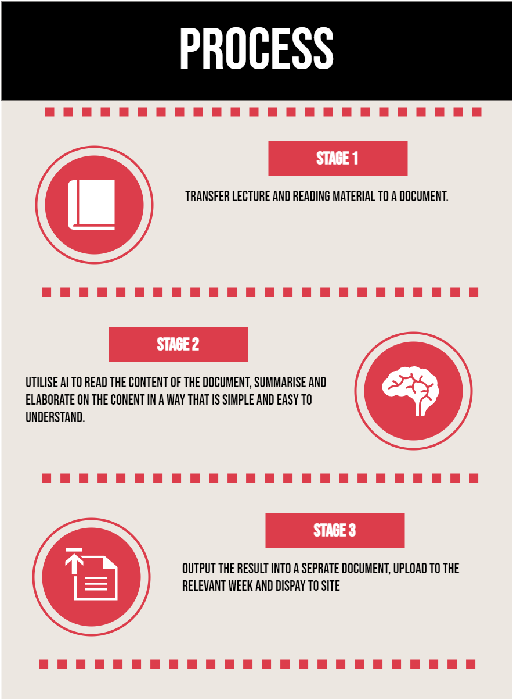

About
This is a personal project to see how current Artificial Intelligence frameworks such as DeepSeek and ChatGPT are able to digest and summarise learning material.
I also wanted to test other AI models to see if they could perform at the same level as ChatGPT-4
I'm also broke and can't afford the chatGPT api.
Project flow
Code
from pypdf import PdfReader
import subprocess
from fpdf import FPDF
# Read the PDF file and extract the text
reader = PdfReader("DS/Week1/Week 1.pdf")
number_of_pages = len(reader.pages)
all_text = ""
# Iterate through each page, extract the text, and add it to all_text
for i in range(number_of_pages):
page = reader.pages[i]
text = page.extract_text()
if text:
all_text += text + "\n"
# Show extracted text (optional)
print("\nExtracted Text:\n")
print(all_text)
# Prepare the AI prompt
prompt = f"""
Summarize the following content. Include headings and bullet points where necessary:
{all_text}
"""
# Run DeepSeek locally using Ollama CLI
ollama_path = r"C:\Users\kevin\AppData\Local\Programs\Ollama\ollama.exe"
model_name = "llama3.2:latest"
result = subprocess.run(
[ollama_path, "run", model_name],
input=prompt,
capture_output=True,
text=True,
encoding="utf-8"
)
# Extract AI response
ai_response = result.stdout
# Print the AI response
print("\nAI Response:\n")
print(ai_response)
# Create PDF
pdf = FPDF()
pdf.add_page()
# Set font for title
pdf.set_font("Arial", "B", 16)
pdf.cell(200, 10, "Week 1 Summary", ln=True, align="C")
# Set font for content
pdf.set_font("Arial", size=11)
pdf.ln(10) # Add space before content
# Use multi_cell for multi-line text
pdf.multi_cell(0, 8, ai_response)
# Save PDF file
pdf.output("Week 1 Summary.pdf")